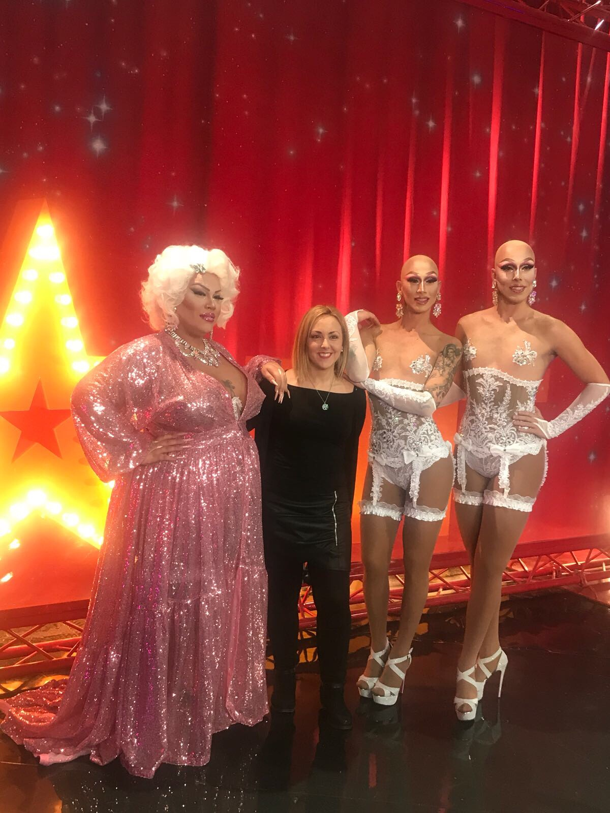

La artista Wendy Superstar, una de las participantes más carismáticas de Got Talent España, protagonizó una actuación que dejó al público y al jurado completamente impresionados. Su puesta en escena, llena de fuerza, personalidad y un estilo visual inconfundible, contó con un elemento clave: el maquillaje profesional realizado por Verónica Artés, directora de Make Up Vartiz.
La colaboración tuvo lugar en las instalaciones de Mediaset España, donde Wendy se preparó para una de sus actuaciones más potentes. Desde el primer momento, Verónica entendió que el maquillaje debía reflejar la esencia de Wendy: autenticidad, energía y un toque artístico que potenciara su presencia escénica bajo los focos.
El proceso creativo combinó técnicas de maquillaje beauty y artístico, diseñadas para resistir la intensidad del directo, el movimiento constante y la emoción del escenario. El resultado fue un look impactante, lleno de matices y detalles que elevaron la actuación a un nivel superior.

El público reaccionó con entusiasmo, y el jurado destacó no solo la interpretación de Wendy, sino también la estética global del número. El maquillaje se convirtió en parte fundamental de la narrativa visual, reforzando la identidad de la artista y aportando un acabado profesional digno de televisión nacional.
Para Make Up Vartiz, esta colaboración representa un orgullo y una muestra más del trabajo que Verónica Artés realiza en el ámbito audiovisual, donde la precisión, la creatividad y la capacidad de adaptación son esenciales.